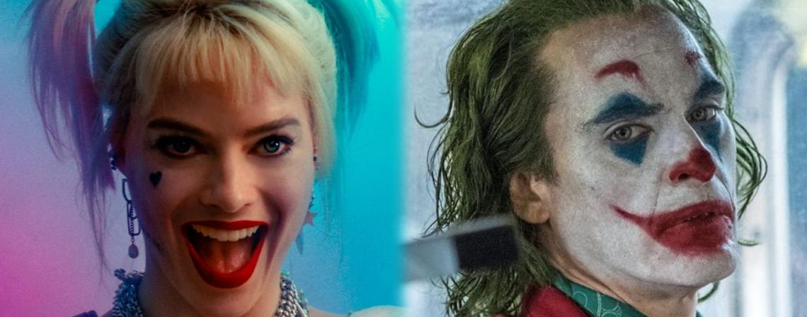

Borde redondeado de 20px
Borde redondeado de 50px
Borde redondeado de 100px
Borde redondeado de 100px
NOTA:La geometría de la imagen (rectángulo en este caso) imposibilita visualizar una imagen redonda
Opciones:
- Redimensionar la imagen con un software de tratamiento de imágenes.
- Redimensionar la imágen mediante CSS